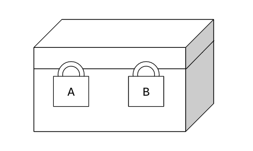

Trust!
Music of the chapter: Secret - By The Pierces
I want to tell you a fascination fact about baby humans. Until some age, they can’t distinguish between themselves and others. The concept of “me” is not evolved in their brains, and they might believe in singularity. When they think of something, they are not aware that their mind is isolated from other minds. They think other humans know what they are thinking of. Months pass, and they start to see themselves, as a physical self, in the mirror or by looking at their organs. Babies don’t lie, because they are not aware of concept of lying and the fact that their mind is isolated and they can have “secrets”.
Humans have their own reasons to lie. Evolution has led us to learn lying, and hiding what we know from others. Because perhaps lying is sometimes vital for survival, and those humans who couldn’t lie, couldn’t survive as well. Evolution made us liars, and we should thank nature for that.
Despite its goodness, lying brings distrust. Humans can not build teams and do great stuff without having a solid foundation of trust. You might wonder why evolution has made humans untrustable, when civilization and progress can be made only in a trusted environment? Not completely sure about this, but this is my own personal guess: negative and unethical behaviors are very advanced forms of intelligence. Emergence of bad behavior is the first step of a huge intellectual progress. You can have a big group of animals (Or even stones), who happily live together, because bad behavior has not evolved in them. This might seem nice at first, but it will quickly get boring for the mother nature, because without distrust, there will be no need for more advanced forms of intelligence.
How do you trust someone as a human? The most naive way for us humans to trust other people is to remind ourselves of the history of their interactions with us. We can't read their minds, but we can at least predict and guess how they are going to treat us in the future by analyzing their past behaviors. In order to remember the history of someone, we need to recognize that person. As a human, we normally recognize others by looking at their face (Or hearing their voice, or even their smell).
Humans show different behaviors to different people. They may not talk to an stranger they way talk to their friend, as an example. It is some form of intelligence to show different behavior to different people. Not all of the species are able to to so. A bacteria for example, cannot recognize its sibling bacterias. Bacterias may have a common strategy to behave with other bacterias, either to trust all of them by default, or consider the worst case in its interactions.
Being able to recognize your friend is definitely something that helps the evolution of mind, so it now might seem obvious that why some species have started to be different with each other in terms of looks. Knowing that people recognize, predict and judge others' behaviors by their looks, speeches and the history they have with them, opens a lot of ways to hack it. Knowing all this, people started to take advantage of other people, by putting masks.
This chapter is all about secrets, honesty and trust, and also about facts, dishonesty and distrust.
One of the ingredients of a civilized nation, is the ability to send messages to people, even when they aren't near you. That's why humans invented writing. They started to send messages without speaking, by putting symbols on a piece of paper. That was the start of all of the problems, because now you can't see the face of the writer. How can you know that a message you have received on a letter, is really sent by your friend, or someone that has bad faith (E.g. your enemy)?
Signatures
I would like to define signature as a more general term: a signature is something that is special to someone/something. Your face, your voice, the way you speak, your fingerprint, your handwriting are all examples of signatures. They are special to you, and it's hard to find someone other than you that has the exact same handwriting or face or etc. Therefore, they are an important ingredient of trust. If you know your friend's handwriting well, you can catch a faker/pretender easily, because most probably he can't fake your friend's handwriting very well.
A signature doesn't solve all of the problems. Sometimes you might need to say something to a friend but do not want anybody else to hear it. In a face to face communication, this might be fixed easily (At some level!). You both can go into a private room, and make sure nobody else is nearby. But how can you do this when your message is on a piece of paper, and you don't want to carry the message yourself, but you want a middle man to send it for you. How can you be sure that someone won't read the letter in the middle of the way?
These questions are all discussed and answered in a vast field of science called Cryptography. Cryptography has a long history. Historians claim that the first use of cryptography started sometime around 1900 BC in ancient Egypt. Though the interesting thing is that, the use of cryptographic symbols back then was for people's own amusement (You know, it's fun to break codes and solve riddles). So it was somewhat a kind of art and literature, and not serious attempts in secret communication.
Substitution ciphers were probably the most popular way of coding the messages among ancient people. In a substituion cipher, there is a fixed one-to-one mapping that tells you which character to use instead of a character in the original message. As an example, let's say our mapping simply maps a character to its next character in the English alphabet (This is an example of a Caesar cipher). So the coded version of "hello" would be: "ifmmp". Though this is a very simple mapping and can be easilly hacked (Someone can just try different number of character shifts until something meaningful comes out of the text).
A harder to crack version of a substitution cipher uses random character mappings. This method was sophisticated and seemingly-secure enough that people used it for thousands of years, until an Arab mathematician named Al-Kindi surprisingly showed that it's easy to crack (Sometime around AD 800). He invented a method called frequency analysis. In this method, we first count the number of times each letter happens in large amounts of text (From books and etc), and then build a frequency graph out of it, which shows us which letters are most/least used in the target alphabet. We then do the same thing with the cipher text, and then try to find the mapping with the help of frequency data. As an example, doing frequency analysis on the English alphabet shows us that the E (11.16%), A (8.49%) and R (7.58%) letters are the most widely used characters in English texts, while the Q (0.1962%), J (0.1965%) and Z (0.2722%) are the least used ones. By doing the frequency analysis on the target text (If the encrypted text is large enough!), if we figure out that the letter K is the most common encrypted letter, you can know with a high probability that K is the encoded version of E or A. His discovery is known to be the most important cryptanalytic advance until World War II.
Al-Kindi proposed that we can make frequency analysis methods less effective by using polyalphabetic substititutions. So far we have been describing monoalphabetic substitutions, which means, single characters are encrypted to single character. In a polyalplabetic substitution cipher, multiple letters are substituted with multiple letters. In order to apply frequency analysis attack on a 2-by-2 polyalphabetic substitution cipher, we have to calculate frequencies of aa, ab, ac, .., zx, zy, zz. Analysis gets much harder when the length of mappings is increased.
Discovering the fact that a polyalphabetic substitution cipher is hard to decode (Even with frequency analysis methods), was a huge progress in cryptography. But there is a problem: in order to encrypt and decrypt using n-character to n-character polyalphabetic substitution ciphers, we have to create a unique n-character to n-character mapping, and both the encryptor and decryptor should have a copy of it (Let's call this mapping the secret key). Assuming our target alphabet has \(\alpha\) letters, and we want to substitute \(n\) characters per block, our mapping should have \(\alpha^n\) entries. In case of English language (Without ponctuation marks), we have 26 character. Let's say we would like to use 5-character to 5-character ciphers for encryptions, then our code-book would need to have \(26^5 = 11881376\) entries, which is already a very giant secret key for a very weak encryption/decryption algorithm.
Let's analyze the problem by using more primitive pieces of data as our source texts. Imagine we are working with binary strings. In a binary string, smallest piece of information is stored inside a bit, which can be either 0 or 1. Our alphabet has 2 characters in a binary string so \(\alpha=2\). Now let's say we want to use a monoalphabetic cipher for encrypting/decrypting the string. so we should create a 1-bit to 1-bit mapping for our encryption algorithm. There are only two ways we can build such a mapping!
\(enc_1(0) = 0 \ enc_1(1) = 1\)
And:
\(enc_2(0) = 1 \ enc_2(1) = 0\)
This cipher is very easy to crack. All you have to do as an attacker is to read the cipher text, if it already means something, you have successfully decrypted it, otherwise just swap the bits (I.e change zeros to ones and vice versa), and then, if the source text has some meaningful information and a 1bit-to-1bit encryption algorithm is used, you will get the source text!
So far, we have seen that our secret keys in this scheme have 2 entries. Can we somehow compress this?
Instead of storing the entries for each bit (Which takes 2 bits), we can use a single bit, telling us if we should swap the bits or not!
Let's switch to a polyalphabetic cipher, mapping 2 character to 2 characters each time now. There exist 4 possible substitution mappings now:
\(enc_1(00) = 00 \ enc_1(01) = 01 \ enc_1(10) = 10 \ enc_1(11) = 11\)
Compressed version: \(00\)
\(enc_2(00) = 01 \ enc_2(01) = 00 \ enc_2(10) = 11 \ enc_2(11) = 10\)
Compressed version: \(01\)
\(enc_3(00) = 10 \ enc_3(01) = 11 \ enc_3(10) = 00 \ enc_3(11) = 01\)
Compressed version: \(10\)
\(enc_4(00) = 11 \ enc_4(01) = 10 \ enc_4(10) = 01 \ enc_4(11) = 00\)
Compressed version: \(11\)
Just like how we compressed the 1-char to 1-char mappings into a single bit, we can compress the 4 possible 2-char to 2-char mappings into two bits (Instead of passing all the 4 entries). For each bit of the compressed secret key, we just have to tell if the corresponding bit should be swapped or not.
Definition of secure
The output of an encryption algorithm is known to be secure, when the output binary string looks rubbish, and totally random. Which means, there is no way you can recognize if the output is a string generated by uniformaly picking random letters, or something else.
Some properties of a random string:
- The number of each letter is equal with other letters (In case of a binary string, the number of 1s is equal with 0s)
- ...
XOR is the answer to everything
We can now conclude that, we don't need to store a mapping of size \(2^n\) (\(\alpha=2\) since we are working with binary strings) in order to encrypt/decrypt binary texts. We just need to store a key of size \(n\) bits, which shows us, for each bit, whether we should swap the corresponding bit or not.
Generating the an \(n\) bit key for a n-character to n-character encryption algorithm is as easy as throwing a coin for \(n\) times and fortunately, we all trust the coin flips already!
Although this method can be mathematically proven to be secure (In fact, the method has a name: the one-time padding algorithm), it is not practical, and the reason is that, the keys are not reusable. Suppose we have two messages \(m_1\) and \(m_2\), and a key \(k\) which we’ll use for encrypting both messages:
\(M_1 = m_1 \oplus k\)
\(M_2 = m_2 \oplus k\)
An eavesdropper cannot guess what \(m_1\) is by knowing \(M_1\), but in case he also has a second encrypted message \(M_2\), he can add these two messages together and an something interesting will happen:
\(M_1 \oplus M_2 = m_1 \oplus k \oplus m_2 \oplus k = (m_1 \oplus m_2) + (k \oplus k) = m_1 \oplus m_2\)
If you take the xor of a number with itself, they will cancel-out each other and you will get zero, so the \(k \oplus k\) part is removed from the equation and what you get is basically the sum of messages, which means: \(M_1 \oplus M_2 = m_1 \oplus m_2\), which is definitely a dangerous leak.
To show the importance of the leak, let’s say we want to encrypt two images using this method.
By adding the encrypted images together, you will get a new image which is leaking a lot of information on what the encrypted messages contain.

So, the obvious fact here is that, the one-time padding only works if both parties have access to an infinitely large shared random string, otherwise, they will have to exchange a new key every time they want to communicate, and the size of the key should be equal with the size of the message they want to send, which is impractical. In fact, the messages \(M_1\) and \(M_2\) are only obfuscated when the keys used to encrypt them are different:
\(M_1 = m_1 \oplus k_1\)
\(M_2 = m_2 \oplus k_2\)
\(M_1 + M_2 = (m_1 \oplus m_2) \oplus (k_1 \oplus k_1)\)
The summation of two random keys \(k_1\) and \(k_2\) (If both of the keys are totally random and independent with each other), is somehow like a new encryption key \(k_3 = k_1 \oplus k_2\) which has all the randomness properties of \(k_1\) and \(k_2\). This means that \(M_1 + M_2\) will remain encrypted:
\(M_1 + M_2 = (m_1 \oplus m_2) \oplus k_3\)
Unfortunately, our limited computer memory prevents the parties from storing inifinitely large keys, but what if we want to use the provable secure-ness of the one-time padding algorithm, by only having a single key with limited size? There are tricks we can achieve that! A very clever way is to define a function that gets a key \(k\) with a small, fixed-size, and try to expand the binary string to an arbitary length. There are several ways we can do that. A naive method (That just came to my mind while writing this, and has potentially critical security problems!) is to somehow concatenate a pseudo-random binary string to the current string, which is dependent on the current string. An obvious tool for generating such a thing (Based on what we learnt in previous section), is a hash function!
def expand(k, n):
result = k
while len(result) < n:
result += hash(result)
return result
Signatures
Finite-field elements that we just build are not the only strange kind of group elements besides regular numbers. Matrices exist too, you can define addition and multiplication operations on grids of numbers, and it will behave just as regular numbers.
There is also one very weird kind of group that mathematicians have discovered,
When introducing finite-field, we saw that the algebraic rules that are valid on regular numbers can be valid on other made-up things too! This is not limited to numbers modulo a prime. For example, matrices are also made-up mathematical things that behave very simular to numbers: \((AB)C=A(BC)\) and \(A(B+C)=AB+AC\) and so on.
Making up other things that behave just like regular numbers is fun. One of the most exciting mathematical inventions that ended-up similar to numbers are points that reside on an elliptic curve.
An elliptic-curve is a curve that is defined with a polynomial equation like this:
\(y^2=x^3+\dots\)
For example:
\(y^2=x^3+7\)
By "points", we mean the sets of \((x,y)\) pairs that make the curve equation hold true. E.g, \((1,2\sqrt{2})\) and \((1,-2\sqrt{2})\) are valid points on the curve.
A smart man once assumed that these points are "things" that can be added together, just like numbers. So he had to invent an addition rule that preserves typical rules that apply when working with actual numbers. He had to design the addition rule such that: \((P_1+P_2)+P_3=P_1+(P_2+P_3)\)
Here is what he did: if you pick two points \(P_1\) and \(P_2\), and connect them through a straight line, the line will most probably hit the curve again in an extra point \(P_3\) (Unless the line is completely vertical). Notice that this happens because there is a \(x^3\) component within our equation! If we had a \(x^4\) there, the line could intersect with the curve in two additional points instead of one!
The smart man made an brilliant assumption: if you add points that reside on a straight line together, the result will be some imaginary point that behaves like a zero. So, in case the line intersects with the curve in three points: \(P_1+P_2+P_3=P_{zero}\)
What do I mean by "behaves like a zero"? Just like the regular 0, When you add the zero-point to a point, it should leave it untouched, so: \(P + P_{zero} = P\). For some curves (Like the one we are discussing here) the zero-point does not really exist (I.e you can find a \((x,y)\) pair that acts like a zero-point), so we have to make it up, and pretend it always existed! (Very similar to our approach with imaginary numbers!)
As previously noted, when the line you draw is parallel to the vertical axis, it only intersects with the line in 2 points, which means: \(P_1+P_2=P_zero\). By moving one of the points to the right hand side, we'll get: \(P_2=-P_1\). This means that, you can get the negative of a point by drawing a vertical line passing from that point and finding the intersection.
Also, in the case which the line intersects with 3 points, we can move the third point to the right hand side and then we'll have: \(P_1+P_2=-P_3\). This, together with the method we discovered for finding the negative of a point, gives us a complete method for adding two points. We'll just need to draw a line between the points we are going to add, find the third intersection, and the negate it by finding the mirrored point, as illustrated below:
[IMG]
P = 0xFFFFFFFFFFFFFFFFFFFFFFFFFFFFFFFFFFFFFFFFFFFFFFFFFFFFFFFEFFFFFC2F
def egcd(a, b):
if a == 0:
return (b, 0, 1)
else:
g, y, x = egcd(b % a, a)
return (g, x - (b // a) * y, y)
def modinv(a):
g, x, y = egcd(a, P)
if g != 1:
raise Exception("modular inverse does not exist")
else:
return x % P
class Point:
def __init__(self, x, y):
self.x = x
self.y = y
def is_zero(self):
return (self.x is None) and (self.y is None)
def is_valid(self):
return self.is_zero() or (self.y**2) % P == (self.x**3 + 7) % P
def __neg__(self):
return Point(self.x, P - self.y)
def __add__(self, other):
if self.is_zero():
return other
elif other.is_zero():
return self
elif self.x == other.x and self.y != other.y:
return Point(None, None)
if self.x == other.x and self.y == other.y:
m = (3 * self.x * self.x) * modinv((2 * self.y) % P)
else:
m = (self.y - other.y) * modinv((self.x - other.x) % P)
x = m * m - self.x - other.x
return Point(
x % P,
(-(self.y + m * (x - self.x))) % P,
)
def __str__(self):
if self.is_zero():
return "Point(Inf)"
else:
return f"Point({self.x}, {self.y})"
def __repr__(self):
return str(self)
def __eq__(self, other):
return self.x == other.x and self.y == other.y
G = Point(
0x79BE667EF9DCBBAC55A06295CE870B07029BFCDB2DCE28D959F2815B16F81798,
0x483ADA7726A3C4655DA4FBFC0E1108A8FD17B448A68554199C47D08FFB10D4B8,
)
print((G + G) + G == G + (G + G))
Electronic Cash revolution
You may already know that I am from Iran, a mysterious country under plenty of sanctions, withholding me from doing any financial activity with people outside our isolated world. We don't have international credit-cards in Iran, and our banking system is completely isolated from the rest of the world (At least when I'm writing this book!). As a young, passionate programmer, spending his teenage years working on "open-source" projects, I was dreaming of getting donations for the work I was publishing online, but I couldn't find any way I could accept money from people on the internet. I couldn't even have something like a PayPal account, it was like a dead-end for me, but you know the end of the story, I found about Bitcoin. I don't remember exactly if I myself looked for an "uncontrollable" (Permissionless?) way of receiving money and found Bitcoin as a result, or a Bitcoin company popped onto my eyes while surfing the internet, anyways, Bitcoin was a saviour for me.
Cryptography was once all about encryption and authentication. It was until recently when mankind started to wonder if he can use computers to build some kind of currency that is not controlled by anyone. Many people might wonder why someone might need something like Bitcoin? Bitcoin helped me, a innocent boy, to escape the limitations I had in my country and transact money with people on the Internet. Bitcoin has been useful for me, and for me, this single usecase is enough to say that Bitcoin is awesome and is already solving problems. If you are a privileged person and have not ever faced problems like this, here might be some reasons why you might need a decentralized currency:
- Privacy - You don't want your government to track every small financial activity you are doing
- Control over your money - You don't want your government to be able to block your money anytime it wants.
- Transaction fees - You don't want to pay excessive transaction fees
- Fault tolerance - You want a payment system that is stable and is available 24/7
We need P2P technologies like Bitcoin to stay safe against governments that are (Or may become) evil (And of course, escape from limitations that are unfair!).
If you read about the history of electronic currencies, you already know that Bitcoin is not the first project that brought the concept on the table. There have been many different attempts by different people to build elecronic payment systems that do not rely on a centralized party. Why they failed and Bitcoin succeeded is that those prior projects were not able to solve a very important problem of such systems, and Bitcoin did. Instead of getting into the details, let's try to model a electronic currency from the ground up, given our limited knowledge, and discover the problem ourselves!
Since you already know some asymmetric cryptography and understand how digital signatures work, let's assume we have a few servers that are connected to each other in a network (Internet perhaps?), and are running the same software. The software is a simple key-value store, mapping public-keys to balances. If a public-key does not exist in the database, we assume the balance of that public-key is 0. Creating an account in such system does not need any interaction, you just need to generate a new private-key in your local machine, and whenever you want to know how much money you have (Which is 0 by default), you will just need to query one of those servers.
Transacting money in such system is as easy as creating a message, in which you clarify who you are (I.e. your public-key), how much and whome you are sending money to (I.e. destination public-key), and then signing the message with your private-key. When those servers receive and read your message, they'll try to validate and process your transaction, and update the balance sheet accordingly.
The transactions also include a unique identifier, so that the servers can recognize if a transatcion is already processed and should not be processed again.
The system works nicely, until someone tries to confuse the network by spending his money twice.
Let's say we have Alice, Bob and Charlie in the network, each having 5 coins according to the balance sheet. Charlie creates two transactions, sending 3 coins to Alice in one, and sending 3 coins to Bob in the other transactions. Obviously, the servers can only process one of those transaction and not both of them, since Charlie doesn't have sufficient fund.
This means the network will have two possible states after hearing those two transactions:
- State #1 Alice: 8 - Bob: 5 - Charlie: 2
- State #2 Alice: 5 - Bob: 8 - Charlie: 2
Charlie can buy a product from both Alice and Bob by sending the same 3 coins to them, effectively spending his coins twice. The problem arises due to the fact that the servers in our network can not agree on the state. Some servers may stop in the #1 state and some in #2, and both states are indeed valid. This problem is known as the Double-Spending problem, and the reason it happens is that the servers can't decide which transaction occurred first.
The classic approach in solving the double-spending problem is to have a central authority deciding the order of transactions. Imagine writing two cheques for Alice and Bob, spending 3 of your coins (While you only have 5). If they go to the bank and try to cash out the cheque at the exact same time, only one of the cheques will pass, since there is a single server somewhere, timestamping the transactions as they happen, disallowing a transaction to happen in case of insufficient balance.
The main innovation behind Bitcoin was its creative solution to the Double-Spending problem, which is called Proof-of-Work. Through Proof-of-Work, the servers in the network could agree only on a single state, without needing a centralized authority. As its inventor describe Bitcoin, Proof-of-Work is a decentralized method for "timestamping" transactions.
The most precious spam-fighter!
Back in 1997, Adam Back, a british cryptographer and cypherpunk, invented something called HashCash. HashCash was a method people could use to fight with denial-of-service attacks (Excessive number of requests trying to get a service down). The idea was to require users to solve a moderately hard puzzle before allowing them to use the service. The solution could also be used as a spam filter (Imagine recipients only accept a mail in their inbox when a solved HashCash puzzle is attached to the mail). HashCash was assuming that we can make the life of attackers/spammers much harder, by requiring them to put significant computation resources for every request/email they make.
The puzzle was to find certain inputs for a hash function such that the output is below a threshold. I can't explain this better than a piece of Python code:
import hashlib
def h(inp):
return int.from_bytes(hashlib.sha256(inp).digest(), byteorder="little")
MAX_VAL = 2 << 256 - 1
THRESHOLD = MAX_VAL // 10000000
MY_EMAIL = b"Hey, I'm not trying to spam you! :)"
i = 0
while True:
if h(MY_EMAIL + i.to_bytes(8, "little")) < THRESHOLD:
print("Nonce:", i)
break
i += 1
Imagine a fair dice with 6 sides.
- If you want to get a 1, you must approximately roll the dice for \(\frac{6}{1}=6\) timess.
- If you want to get a \(\leq 2\), you must approximately roll the dice for \(\frac{6}{2}=3\) timess.
- If you want to get a \(\leq 3\), you must approximately roll the dice for \(\frac{6}{3}=2\) timess.
- If you want to get a \(\leq 6\), you must approximately roll the dice for \(\frac{6}{3}=1\) timess.
The same is true with hash functions. Hash functions are analogous to giant dices. As an exmaple the SHA-256 hash function generates outputs between \(0\) to \(2^{256}-1\). In order to get an output below \(\theta\), you will need to try different inputs (Roll the dice) for \(\frac{2^{256}}{\theta}\) times. You can roll a hash-function by "slightly" changing its input (In the HashCash example, we append a small piece of data to the original data and randomly change it until we get our desired output).
In our HashCash example, we require the email sender to "work" approximately as much as running SHA-256 for 1 million times!
Chaining proofs of work!
Satoshi Nakamoto discovered a interesting fact about proof-of-work puzzles. After solving a proof-of-work puzzle, you can append some more data to the whole thing and try to solve the proof of work puzzle again for the new data.
Suppose we first find \(nonce_0\) such that: \(H(data_0 | nonce_0) < \theta\). We then append \(data_1\) to the hash of old data and find \(nonce_1\) such that \(H(H(data_0 | nonce_0) | data_1 | nonce_1) < \theta\)
Solving a proof-of-work puzzle on \(H(data_0 | nonce_0) | data_1\), not only proves that you have worked hard on commiting to \(data_1\), but also shows that you have put equal amount of work to also commit on \(data_0\), for one more time, and that is because altering \(data_0\) not only invalidates the first proof-of-work, but also the second proof-of-work. Assuming that it takes 1 minute to find an appropriate nonce for a piece of data, altering \(data_0\) would invalidate both \(nonce_0\) and \(nonce_1\), meaning that you should find the values for \(nonce_0\) and \(nonce_1\) again, requiring you two solve 2 proof-of-work puzzles, spending two minutes of your CPU time. The longer the chain is, the harder it becomes to alter older data.
Proof-of-Work on financial transactions
Here is the main innovation of Bitcoin: Let's solve proof-of-work puzzles on batches of transactions, and give more priority to those transactions that more work has been done on them! If we apply the chaining trick here too, the older transactions will become harder and harder to be reverted.
Making Proof-of-Work work less!
Without any doubt, using an incentivized Proof of Work as a way to bring consensus to a public payment network is a revolutionary idea, but there are some obstacles in this method that had been annoying some people, making them wonder if there are any better ideas.
The biggest problem of PoW is its excessive use of energy. Bitcoin (As of 2023) is consuming about 127 TWh per year, and this surely may seem unacceptable by engineers. So people started to play with PoW and try to make it consume less. Part of the reason PoW functions consume a lot of energy is that, people have built specialized hardware for calculating a SHA-256 hash (Known as Application-Specific Integrated Circuit, or ASICs), which is much faster and cheaper than a regular computer, and consumes way more energy. It makes much more sense and profit for people to use these devices instead of wasting their full-featured computers which are designed to do general-purpose computations. So people thought, if we somehow redesign a new hash function, so that building a ASIC for it is almost the same as building a full-featured computer, we may remove the incentive for people to build specialized hardware for it, thus
The earliest ideas in this regard were proposing to make the PoW hash function more dependent on RAM, by requiring a lot of memory to be consumed while generating the hash. Such a hash-function will require a big RAM, and RAMs are surely slow and complicated stuff. Algorithms that do memory operations more often suffer from the memory-access delays. The CPU in this case will be mostly idle, waiting for the memory to return the result. In this case, building a specialized hardware doesn't give you a lot of speed-up, since the memory will be the bottleneck. This makes people to prefer computers over ASICs, leading to overall less usage of energy.
Ready to build a hash function that consumes a lot of memory? Here is a made-up example that is also very inefficient:
import hashlib
def memory_consuming_hash(x):
farm = [x]
for i in range(100000):
farm.append(hashlib.sha256(farm[-1]).digest())
data = b''.join(reversed(farm))
return hashlib.sha256(data).digest()
print(memory_consuming_hash(b"123"))
The hash function starts with a list containing the input data. It then goes through a big loop, adding to the list the hash of the last element in the list. Finally, all the items in the list are concatenated with each other and hashed. The reason we are reversing the list before hashing is that, we want to prevent the hasher from simultanously trying to calculate the hash of final input, throwing away the old data (We purposefully want the hasher to memorize everything, otherwise our hash function isn't really memory intensive). If we didn't reverse it, the attacker could simply rewrite the code in a better way so that it requires very small amount of memory.
The proposed hash function is completely made-up, very inefficient and might be insecure. Designing memory-intensive hash functions is a broad topic to discuss, but it explains you the core idea.
Proof of Stake
Bitcoin had an intellectual community back then (It still has!). There were a lot of people talking about ways they can improve Bitcoin in public forums and chat-rooms. One of the revolutionary ideas which was shared as a topic on Bitcointalk was: to expect different hardness of the PoW puzzle from different people, based on their balance. Those with less coins have to work on harder problems, and those with a lot of coins are only required to solve a simple Proof-of-Work puzzle!
If you remember in previous sections, a typical Proof-of-Work puzzle expected you to try, on average, \(\frac{H_{max}}{\theta}\) different nonces in order to find the appropriate nonce. Here we are going to make the puzzle easier for people with more coins. So we somehow have to reduce \(\theta\) in case of a higher stake and reduce it for lower stakes. One way we can handle this is by multiplying \(\theta\) with \(\frac{S_{user}}{S_{total}}\). (Where \(S_{user}\) is this user's stake and \(S_{total}\) is the sum of stakings of all users). This way, the average number of nonce trials needed wiil become \(\frac{H_{max}}{\theta \times \frac{S_{user}}{S_{total}}}\). The higher user's stake is, the closer the fraction becomes to 1, maximizing the possible theta. When the stake of user approaches to zero, the fraction becomes 0 too (Resulting to a smaller theta and a harder puzzle).
The idea discussed above was of the earliest ideas of a Proof-of-Stake consensus algorithm. It really brings in some kind of PoS in the first look but, unfortunately, people with hardware advantages can still take advantage and win all of the blocks. The discussed algorithm is a step towards PoS, but it is not a pure PoS, as it inherits the most weaknesses of a PoW algorithm.
People thought more and more on the nature of a PoS algorithm, and they decided that an ideal PoS algorithm should have nothing to do with a PoW puzzle, but it only has to perform an election between the stakers. The higher you stake, the more chance you will have to win the next block. In order to perform an election in a computer, you will need some source-of-randomness. Let's suppose we have a source of randomness, which gives us values between \(0<r<1\).
Assuming we have \(n\) stakers (Sorted in descending order) \(S_1, S_2, \dots, S_n\), where \(S_T\) is the sum of all staked amounts, we know that \(\frac{S_1}{S_T} + \frac{S_2}{S_T} + \dots + \frac{S_n}{S_T} = 1\). Thus, if we put these stakers on a ribbon, the length of the ribbon will become 1. Now, assuming \(r\) is a random number between 0 and 1, if we mark the corresponding location of \(r\) on the ribbon, it will go inside one of the stakers. We can consider that staker to be the one who is able to generate the next block!
The million dollar question in this method is, who decides the value of \(r\)? Obviously, we can't rely on single party to decide the random number \(r\) for the whole network. The members of the network can not verify if the number provided by the centralized entity is indeed random, or it has purposefully chosen in a way to maximize his own profit.
An interesting method for deciding the random number here is by using a hash function. If you divide the output of a hash function by its maximum value, you will get a floating point number between 0 and 1, which pretty much looks like a uniformly distributed random value. The input given to the hash function can be obtained from the blockchain itself! We can use the hash of last block to get the random value \(r\) used to elect the winner of the next block!
Unfortunately, this method can be easily exploited by an attacker: Imagine the attacker is elected to produce the block \(n\). Now, since the random value of the next block is dependent on the hash of previous block (I.e \(r_{n+1}=h(b_n)\)), the attacker has full control on the value of \(r_{n+1}\). He can alter the block \(b_n\) in a way so that he is elected again for generating the next block! Altering the block can be done in various ways, for example, the attacker can put a dummy transaction in block \(b_n\), sending some funds to himself. The attacker can alter the hash of the block, by simply trying different possible amount values in that transaction. This way, the attacker may win all of the blocks, in case he successfully finds appropriate amount values, making the block have the desired hash value.
Isn't this familiar? That's literally what we were doing in Proof-of-Work! The only difference is that here instead of trying different nonce values, we are trying different amount values in our dummy transaction. The more hardware we have, the higher chance we can win the blocks in the network. We can claim that our proposed PoS algorithm is still a PoW in its heart!
If you look carefully to all these alternative methods, you will see that the source of the problem comes from the fact that the members are able to replay the election process by simply changing some value in previous blocks. If we somehow take this power from the members, and allow the members to generate a random value only once, the problem is solved!
Trust me, it's random!
[TODO]
It's time to commit
Now you probably have an accurate intitution on how cryptographic hash functions work (If you are convinced that the Proof-of-Work algorithm really works). But it's also good to know the formal definition of a cryptographic hash function. A cryptographic hash function is a function that is:
- Collision-resistant: It's hard to find a pair of \(x\) and \(y\) where \(H(x)=H(y)\).
- Preimage-resistant: Given \(y\), it's hard to find \(x\) where \(H(x)=y\).
- Second-perimage-resistant: Given \(H(x_1)=y\), it's hard to find \(x_2\) where \(H(x_2)=y\).
Besides generating proofs of work, there are other interesting things you can do with hash functions. In general, cryptographic hash functions let you to commit to a secret value, and reveal it later.
Cryptographic games
A useful example is when you want to play the Rock/Paper/Scissors with your friend over phone. You can agree to shout out your choice simulatanously, but there is always the chance that your friend may hear your choice and make his choice based on that, always winning the game. What if you guys want to play Rock/Paper/Scissors over physical letters? It'll become much harder to prevent cheatings! Cryptographic hash functions come handy here:
- Alice chooses his option \(a\), but instead of revealing \(a \in {R, P, S}\), she reveals \(H(a)\).
- Just like Alice, Bob chooses \(b \in {R, P, S}\), and reveals \(H(b)\).
- Now both Alice and Bob know that their opponent has made his choice and commited to it, so they can reveal their choices.
- They both will check if their opponent's choice matches with their commited value (If it doesn't, it means the opponent is cheating).
- If everything is alright, winner is determined according to \(a\) and \(b\).
There is a hack to this approach. Since the options are very limited, both Alice and Bob can pre-compute a table of all possible choices and their respective hashes. Then they'll be able to know their opponent's movement based on their commited value. We can prevent this by introducing an extra random value appended to the input of the hash function, known as a salt. (It's dangerous to directly store the passwords of the users in a web-application's database. It's also dangerous to store hashes of the passwords, since many users choose weak passwords and attackers may build pre-computed tables by trying many different popular passwords, just like what an attacker can do in the Rock/Paper/Scissors game we just designed, so you have probably seen that a random salt is added to the user's password before applying the hash function. The salt is stored on the database for later verifications).
It's nice to remember: Whenever you are designing a cryptographic protocol and would like to prevent attacks based on precomputed-tables, adding a salt is a efficient and good solution.
The following Python code will let you to generate commitments for participating in a cryptographic Rock/Paper/Scissors game:
import random, hashlib
choice = input("Choice? (R/P/S)")
assert choice in ["R", "P", "S"]
# Generate a random 16 letter alphanumeric salt
salt = "".join(random.choice("0123456789ABCDEF") for i in range(16))
commit = hashlib.sha256((choice + salt).encode("ascii")).hexdigest()
print("Salt (Reveal it later!):", salt)
print("Commit:", commit)
# Reveal choice and salt later
After both you and your opponent have got the commitments of each other, you may now reveal your choices and respective salts. The following Python3 program may be used for finding the winner:
import hashlib
alice_choice = input("Alice choice? ")
alice_salt = input("Alice salt? ")
alice_commit = input("Alice commitment? ")
if alice_choice not in ["R", "P", "S"]:
print("Alice has made an invalid move!")
if (
alice_commit
!= hashlib.sha256((alice_choice + alice_salt).encode("ascii")).hexdigest()
):
print("Alice is cheating!")
bob_choice = input("Bob choice? ")
bob_salt = input("Bob salt? ")
bob_commit = input("Bob commitment? ")
if bob_choice not in ["R", "P", "S"]:
print("Bob has made an invalid move!")
if bob_commit != hashlib.sha256((bob_choice + bob_salt).encode("ascii")).hexdigest():
print("Bob is cheating!")
# Winner may now be determined based on alice_choice and bob_choice!
print("Alice:", alice_choice)
print("Bob:", bob_choice)
Commiting to a set of values
Not only you can commit to a single value, but you can commit to multiple values, and later prove and reveal the existence of a certain value in the set. Here is a silly cryptographic game where commiting to a set of values might be useful. Imagine I have chosen a number between 0 to 1000, and I want you to make 20 guesses on what my number is. You may take 20 random guesses and commit to it by taking the hash of a comma seperated string, containing all of your guesses. You can then reveal your guesses and I can check:
- If you really have only chosen 20 numbers, and not more (Just split the comma-seperated string by
,and check its length) - If your guess list includes my number
Now, there is problem. What if the guess list is very large? (Imagine millions of numbers). You have to reveal all of my guesses, otherwise I can't check if your commitment matches your numbers. Is there any way I can prove existence of a certain number in my list, without revealing all other numbers I have in the list? (Both for privacy and performance reasons). There is!
Binary trees are your best friend, any time you want to optimize the space-efficiency or computation-efficiency of something related to computer science!

Inventing a new math
The math we are used to, is all about different operations you can perform on numbers. You can add them, subtract them, multiply them or divide them by each other. These operations (If you are not really into math) only make sense if the operands are number. For example, you can't add an apple to an orange, it's meaningless, because the definition of addition is meaningless in case of fruits. But let's assume it's possible, and try to invent some new kind of math for fruits. Imagine the fruits we are working with in our new math are: Apple, Orange and Banana. There are 9 different possibilies when fruits are added together (\(3 \times 3\)), and since the result of adding two fruits is also a fruit, there will be a total of \(3^9\) ways we can invent the \(+\) operation on fruits. Here is an example:
| A | B | A + B |
|---|---|---|
| Apple | Apple | Orange |
| Apple | Orange | Orange |
| Apple | Banana | Apple |
| Orange | Apple | Banana |
| Orange | Orange | Orange |
| Orange | Banana | Banana |
| Banana | Apple | Apple |
| Banana | Orange | Orange |
| Banana | Banana | Banana |
Unfortunately, the math we have just invented on fruits does not obey some of the properties we are used to when adding numbers. For example, you might expect that \(Orange + Banana\) is equal with \(Banana + Orange\), but in our new, randomly invented math, that's not the case. There are other missing features too, for example: \((Apple + Orange) + Banana\) is not equal with \(Apple + (Orange + Banana)\)! Try to redesign the \(+\) operation, so that we have the mentioned properties in our fruit-math too.
Here is an example of a fruit-math that perfectly obeys the mentioned laws:
| A | B | A + B |
|---|---|---|
| Apple | Apple | Apple |
| Apple | Orange | Orange |
| Apple | Banana | Banana |
| Orange | Apple | Orange |
| Orange | Orange | Banana |
| Orange | Banana | Apple |
| Banana | Apple | Banana |
| Banana | Orange | Apple |
| Banana | Banana | Orange |
Let's make our fruit-math more interesting. Addition is not the only operation we can do on numbers. We can do multiplications too. Just like additions, multiplication of fruits is also meaningless (Even more meaningless than addition!), but that's ok, just like what we did with the addition operator, we can also design a table for multiplication. There will be \(3^9\) different possible defintions for \(\times\). If we start with a random table, we will lose some of the properties \(\times\) operator has on regular numbers. In case of regular numbers, we know that \(a \times b\) is equal with \(b \times a\). There is also one very unique and important property that we have on regular numbers. \(a \times (b + c)\) is equal with \(a \times b + a \times c\). Try to design \(\times\) operator on fruits so that it obeys these properties too. You will probably reach to a table like this:
| A | B | A * B |
|---|---|---|
| Apple | Apple | Apple |
| Apple | Orange | Apple |
| Apple | Banana | Apple |
| Orange | Apple | Apple |
| Orange | Orange | Orange |
| Orange | Banana | Banana |
| Banana | Apple | Apple |
| Banana | Orange | Banana |
| Banana | Banana | Orange |
Since there are limited number of addition/multiplication tables that obey math rules we are used to, we can conclude that there are very few varities of math we can design for Apples, Bananas and Oranges. One clever way to easily extract new fruit-maths is to use substitute the fruits in our current tables with another permutation of fruits (E.g. change Apple->Banana, Banana->Orange and Orange->Apple). But who are we going to fool! These tables are still somehow equal with the first table, and we haven't really invented a new math! There is even a scientific word for it, the tables generated this way are actually isomorph with each other, or in other words, there exists a mapping for the elements in the first table, that migrates us to the second table!
Strangely, out of \(3^9.3^9\) possible ways we can invent a math for fruits (Assuming we want to fill the addition and multiplication tables), only few of them are valid and behave as expected, and all of those valid maths are isomorph with each other, meaning that effectively, we only have a single kind of math, in case we have 3 number of elements! Mathematicians refer these kind of maths as: Finite-fields
Now imagine we use substitute Apples, Oranges and Bananas with numbers under 3 (0, 1, 2), respectively (Obviously, we will get an isomorph). Here is how the addition and multiplication tables will look like:
| A | B | A + B |
|---|---|---|
| 0 | 0 | 0 |
| 0 | 1 | 1 |
| 0 | 2 | 2 |
| 1 | 0 | 1 |
| 1 | 1 | 2 |
| 1 | 2 | 0 |
| 2 | 0 | 2 |
| 2 | 1 | 0 |
| 2 | 2 | 1 |
| A | B | A * B |
|---|---|---|
| 0 | 0 | 0 |
| 0 | 1 | 0 |
| 0 | 2 | 0 |
| 1 | 0 | 0 |
| 1 | 1 | 1 |
| 1 | 2 | 2 |
| 2 | 0 | 0 |
| 2 | 1 | 2 |
| 2 | 2 | 1 |
Strangely, we can see that the addition/multiplication tables are basically just modular addition/multiplication! (I.e addition and multiplication modulo 3).
Making things hard
Now, let's discuss one of the most fundamental assumptions that made modern cryptography possible. I would like to start with a simple equation. Find \(x\) such that:
\(3^x = 243\)
Finding the correct value of \(x\) in such an equation is not going to be difficult. You'll just need to take the logarithm of the right hand side of the equation, and you'll have the correct \(x\). You'll basically divide the right hand side by \(3\), until it gets \(1\). \(x\) is the number of times you have done the division.
Let's change the equation a little bit, by switching to a made-up mathematics (E.g mathematics defined on numbers modulo 19) that we discussed earlier! Here is the new equation, try to solve it:
\(3^x \mod 19 = 4\)
Unfortunately, this equation is not as simple to solve as the previous one. We discussed how addition and multiplication can be done on our made-up math, but we didn't discuss how we can divide two numbers! So, our best bet is to try to brute-force the problem, by trying all different \(x\)s:
- \(3^0 \mod 19 = 1\)
- \(3^1 \mod 19 = 3\)
- \(3^2 \mod 19 = 9\)
- \(3^3 \mod 19 = 8\)
- \(3^4 \mod 19 = 5\)
- \(3^5 \mod 19 = 15\)
- \(3^6 \mod 19 = 7\)
- \(3^7 \mod 19 = 2\)
- \(3^8 \mod 19 = 6\)
- \(3^9 \mod 19 = 18\)
- \(3^{10} \mod 19 = 16\)
- \(3^{11} \mod 19 = 10\)
- \(3^{12} \mod 19 = 11\)
- \(3^{13} \mod 19 = 14\)
- \(3^{14} \mod 19 = 4\)
Voila! The solution is \(x=14\)! Let's not stop here and keep trying higher \(x\)s:
- \(3^{15} \mod 19 = 12\)
- \(3^{16} \mod 19 = 17\)
- \(3^{17} \mod 19 = 13\)
- \(3^{18} \mod 19 = 1\)
- \(3^{19} \mod 19 = 3\)
- \(3^{20} \mod 19 = 9\)
- \(3^{21} \mod 19 = 8\)
- \(\dots\)
After \(3^{18}\), we'll see that the results are repeating again. It looks like a cycle! In fact, you can start with any number under 19, after multiplying it by 3 for 18 times, you'll get back to that number again!
\(a \times 3^{18} \mod 19 = a\)
Let's try a different modulus this time. For example, let's try 23. This time, you'll see that the cycle happens after 22 iterations. It seems like that:
\(3^{m-1} \mod m = 1\)
But that is not the case! Try 25:
- \(3^{0} \mod 25 = 1\)
- \(3^{1} \mod 25 = 3\)
- \(3^{2} \mod 25 = 9\)
- \(3^{3} \mod 25 = 2\)
- \(3^{4} \mod 25 = 6\)
- \(3^{5} \mod 25 = 18\)
- \(3^{6} \mod 25 = 4\)
- \(3^{7} \mod 25 = 12\)
- \(3^{8} \mod 25 = 11\)
- \(3^{9} \mod 25 = 8\)
- \(3^{10} \mod 25 = 24\)
- \(3^{11} \mod 25 = 22\)
- \(3^{12} \mod 25 = 16\)
- \(3^{13} \mod 25 = 23\)
- \(3^{14} \mod 25 = 19\)
- \(3^{15} \mod 25 = 7\)
- \(3^{16} \mod 25 = 21\)
- \(3^{17} \mod 25 = 13\)
- \(3^{18} \mod 25 = 14\)
- \(3^{19} \mod 25 = 17\)
- \(3^{20} \mod 25 = 1\)
Our prediction didn't work out, the cycle happened after 20 iterations! In fact, after trying different examples, we'll soon figure that our prediction is true only when the modulus is a prime number! So, how can we predict the cycle length in case of a non-prime modulus?
Swiss mathematician, Leonhard Euler, designed a formula for that purpose in 1763. It's also known as Euler's totient function, and is defined as below:
\(\varphi (m)=p_{1}^{k_{1}-1}(p_{1}{-}1),p_{2}^{k_{2}-1}(p_{2}{-}1)\cdots p_{r}^{k_{r}-1}(p_{r}{-}1)\)
(Assuming \(m=p_1^{k_1}p_2^{k_2}p_3^{k_3} \cdots p_r^{k_r}\))
He also stated, in the Euler's theorem, that:
\(a^{\varphi(m)} \equiv 1 {\pmod {m}}\)
So, in the previous example, we know that \(25=5^2\), therefore, \(\varphi(25)=5^{2-1}(5-1)=20\), so if we start with some random number \(a\) and multiply by itself for 20 times, we'll get back to the original number!
A mathematical private mailbox
Now, using the facts mentioned above, we would like to design a public-key cryptography system. In such cryptographic protocol, one can encrypt a message \(a\) by calculating \(A=a^e\) (Where \(e\) is an encryption key, which is public for everyone), and the receiver can decrypt it by calculating \(a=A^d\).
Let's forget about the generalized form of totient function and only focus on composite numbers of form \(m=pq\). In this case, the output of the totient function is \(\varphi(m)=(p-1)(q-1)\) which means:
\(a^{(p-1)(q-1)} = 1\)
(You might first think that \(e=p-1\) and \(d=q-1\) are practical candidates for \(e\) and \(d\), but they are not, since the right hand side of the equation above is \(1\) instead of \(a\))
Therefore:
\(a^{(p-1)(q-1) + 1} = a\)
We need to find \(e\) \(d\) such that for every \(a\): \((a^e)^d=a\). In fact, \(ed\) should be equal with \((p-1)(q-1)+1\). Finding such numbers isn't too difficult, but we are not going to discuss that.
Now let's say Bob calculate \(e\) and \(d\) gives the number \(e\) to Alice and keeps \(d\) for himself. Let's say Alice has a message \(a\) which wants to send to Bob, but doesn't want anyone but Bob to read it. Instead of \(a\), she can send \(A=a^e\) to Bob. Upon receiving, Bob can calculate \(a=A^d\), and get the original message back.
Diffie-Hellman
We have two people who want to send a physical letter to each other. They can send their letters through a postman (Who unfortunately is very nosy!). They don't want the postman to read the letter. Sender and receiver both have a lock and its key that can put on the box. They can't send their keys to each other! How can the sender send privately send the letter?
- The sender puts the letter in the box and locks it and sends it to the receiver.
- The receiver locks the box with his key too, and sends it back to the sender.
- The sender opens his own lock and sends it back to the receiver.
- The receiver may now open the box and read the letter.

Stealth addresses!
The Diffie-Hellman key-exchange algorithm allows you to calculate a shared-secret between two parties, even when someone is eavesdropping your communication line. Now instead of two people, imagine there are many people participating in a similar scheme, each having their own public-key. Assume on of them wants to send a message to another one in the network, but doesn't want other people in the network to know who he wants to talk with. As a first step, the sender should broadcast his message to everyone, instead of routing it to his desired destination (Because others will know with whom the sender is communicating, even though the messages are all encrypted and private).
- Bob generates a key \(m\) (Master private key), and computes \(M = g^m\) (Master public key), where \(g\) is a commonly-agreed generator point for the elliptic curve.
- Alice generates an ephemeral key \(r\), and publishes the ephemeral public key \(R = g^r\).
- Alice can compute a shared secret \(S = M^r\), and Bob can compute the same shared secret \(S = m^R\) (Very similar to Diffie–Hellman key exchange we just discussed).
- A new public-key can be derived for Bob: \(P = M + g^{hash(S)}\) (Elliptic-curve point addition).
- Bob (and Bob alone, since he only knows the value of \(m\)) can compute corresponding private-key \(p = m + hash(S)\) (Scalar addition).
Now, the receiver may listen to all ephemeral points broadcasted in the network and will try to see if any message is being sent to the corresponding derived public-keys, and see if someone was meaning to communicate with him. In this scheme, only the receiver is able to know that someone is communicating with him, and not anyone else.
[TODO]
Do my computation!
I have always been very curious about different ways we can write programs. Object Oriented, Functional, imperative and etc, all require different kinds of thinking, and it was always exciting for me to learn new languages that introduces a new kind of thinking. Years I have been out of languages that were truly introducing a conpletely new concept, but R1CS is one of the most interesting ways you can program stuff.
R1CS doesn’t actually give you a set of instructions to write your program with, it is not a language at all. It’s a way you can force someone to perform the computation you desire, by solving math equations.
R1CS, short for Rank-1 Constraint System, is a form of math equation which has only a single multiplication among its variables.
Imagine I give you the following equations and ask you to find all possible x, y and z values that satisfy all the equations at the same time.
- \(a \times (1-a)=0\)
- \(b \times (1-b)=0\)
- \(a \times b=c\)
Obviously, since the first and second equations are just quadratic equations, they have two roots, which are zero and one. Knowing the different possible values for a and b we can write a table for it.
| a | b | c |
|---|---|---|
| 0 | 0 | 0 |
| 1 | 0 | 0 |
| 0 | 1 | 0 |
| 1 | 1 | 1 |
You can see that the table is identical with a logical and gate. We can do OR gates too, the last constraint needs to be:
\((1-a) \times (1-b)=(1-c)\)
You might think that you can’t do much by simply just multiplying and adding variables with each other, but the truth is, this particular way of representing programs is actually able to represent any program you can ever imagine. The fact that you can emulate logical gates is enough for concluding that the representation is able to emulate any kind of hardware!
Migrating to bit representations
Obviously, since we can emulate logical operators through plain math operations, we can do pretty amazing stuff too, but the variables in our circuits are normally holding numerical values, and not bits. Fortunately, there are ways we can migrate a numerical variable into its bit representation, by putting constraints like this:
- \(a_0 \times (1-a_0) = 0\)
- \(a_1 \times (1-a_1) = 0\)
- \(a_2 \times (1-a_2) = 0\)
- \(\vdots\)
- \(a_{n-1} \times (1-a_{n-1}) = 0\)
- \(2^0a_0 + 2^1a_1 + 2^2a_2 + \dots + 2^{n-1}a_{n-1} = a\)
Assuming the original value is in the variable \(a\), given these constraints, the solver has no way but to put the bit representation of \(a\) into the variables \(a_0, a_1, \dots, a_{n-1}\).
Checking zeroness
Given three two variables \(a\) and \(z\) (And a auxiallary variable \(tmp\)), we would like to check if the value of \(a\) is zero, by enforcing the value of \(z\) to be 1 in case \(a=0\) and make it \(0\) otherwise.
- \(z = -tmp * a + 1\)
- \(z * a = 0\)
Now, if \(a\) is not zero, \(z\) has no choice but to be zero in order to satisfy the second constraint. If \(z\) is 0, then \(tmp\) should be set to inverse of \(a\) in order to satisfy the first constraint. Inverse of \(a\) exists, since \(a\) is not zero. If \(a\) is zero, then the first constraint is reduced to \(z=1\).
Computer programs inside polynomials
Anonymous transactions
Satoshi wanted Bitcoin to become a more private form of transferring money. He claimed bitcoin provides some form of pseudo-anonimity too, but bitcoin ended up even less private than conventional bank transfers! This happened because bitcoin, and all the transactions happening in it, has no choice but to be public, otherwise it couldn't be decentralized.
In bitcoin, it's the pub-keys that are transferring value with each other, and not human identities. It is indeed very hard to find out who controls a public-key, but the problem is, as soon as a public-key gets related to an actual identity in the real world, the money will get easily traceable afterwards. The creation of this relation is as simple as depositing your cryptocurrency to an exchange, in which you have disclosed your identity by going through KYC procedures. In fact, one of the only ways you can prevent others from finding the mapping between your public-key and your real-world identity, is to trade your crypto directly with others in-person, instead of using a crypto exchange as an intermediary.
Fortunately, although you can't stop others from discovering your ownership of a certain public-key, there are ways you can make it hard for others to understand the interactions between different public-keys within a public blockchain.
Tor network
Tor is a famous piece of software, but its usage is interpreted differently around the world. As someone living in a free country, Tor is mostly a tool for achieving privacy on the internet: to be able to surf around the internet without anyone knowing who you are. On the other hand, in a country with restricted internet, Tor is known as a tool for circumventing censorships!
There are times you want to access a website, but you don't want anyone to know you have accessed it. Tor is different from a simple proxy. In case of a simple proxy, the proxy server knows the IP address of the requester, and knows the IP address that the requester wants to connect with (Although the data transferred between those two cannot be understood by the proxy thanks to the magic of cryptography). So, any kind of proxy leaks your identity, at least to the proxy server, which is not guaranteed not to be an evil!
The Tor network is a smart and innovative idea, allowing people to hide their activities, and remain private, even to their proxy servers. This is done through entities known as: Onion routers.
Socks5
Perhaps dictatorial governments are the main reason one of the coolest kind of softwares exist today: the internet anti-censorship software
Those are protocols invented by people who seek freedomof information, trying to escape limitations that governments put on the internet. Cryptography is the main reason why it has got difficult for the governments to prevent people from getting whatever information they want out of the internet.
Encrypted information is impossible to analyze, and there is no way a man-in-the-middle can distinguish between someone actually opening a legit (In the government's opinion!) website and someone who is trying to break the rules.
Both of those people are putting bit streams on the wires which look completely random by an external observer.
Anti-filtering software are typically software that proxy your internet traffic through a third computer, a computer that is accessible by you, and has access to the free internet. So, instead of directly communicating with the target computer (Which is black-listed by your government and all the incoming/outgoing data from/to that computer is blocked) you will ask someone else to do it for you and return you the result. There are internet protocols exactly designed for that purpose. The simplest one of them is a protocol named Socks (If you know what Socks is, chances are you are living in an awful country!)
The socks protocol, although very simple, is easily detectable by internet providers. Because in Socks protocol, you shout out, in plain text, that you are using Socks5 and asking the other computer to proxy the traffic for you.
Many browsers and operating systems allow you to set socks proxies and natively support it. But, if Socks is so obvious and easy target for internet blockers, why is it so popular across anti-filter software?
The truth is, the Socks proxy protocol is mostly used as a mean for sending data from you browser to a exectuable on your own computer (Fortunately, governments can't restrict the processes in your computer from communicating with each other!), and that executable might simply be a internet usage tracker, or an anti-filter software that uses an entirely different and more sophisticated protocol for proxying your traffic!
Here is a simple implementation of a Socks5 server in Python: